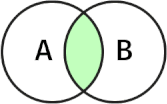
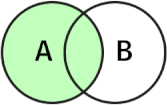
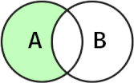
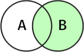
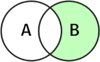
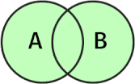
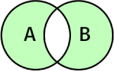

The recipes below is a hodge-podge of doings for MSSQL (mainly), PostgreSQL and MySQL.
EXEC sp_MSforeachtable 'select top(50) * from ?'
ALTER TABLE [dbo].[SubscriptionProductVersions] ADD IsCreditRatingRequired BIT; UPDATE [dbo].[SubscriptionProductVersions] SET IsCreditRatingRequired=0; ALTER TABLE [dbo].[SubscriptionProductVersions] ALTER COLUMN IsCreditRatingRequired BIT NOT NULL;
ALTER TABLE [dbo].[AmortizedLoans] DROP COLUMN IsCancelled;
EXEC sp_rename 'old_table_name.[oldColumnName]', 'newColumnName', 'COLUMN'
update dbo.Table set customerBaseId = customerId where customerBaseId is null;
DROP (FUNCTION | PROCEDURE) [dbo].[GetAccountFirstConsumption];
sp_rename 'old_table_name', 'new_table_name'
ALTER TABLE [dbo].[XXX] NOCHECK CONSTRAINT ALL -- disable constraints ALTER TABLE [dbo].[XXX] CHECK CONSTRAINT ALL -- enable constraints
ALTER TABLE [dbo].[AccountTable] DROP FK_AccountTableParentId_AccountTableId
Retrieves rows with matching values in both tables.
select * from A inner join B on A.key = B.key

Retrieves all rows from A and matching rows from B.
select * from A left join B on A.key = B.key

Retrieves rows from A where there is no matching rows in B.
select * from A left join B on A.key = B.key where B.key is NULL

Retrieves all rows from B and matching rows from A.
select * from A right join B on A.key = B.key

Retrieves rows from B where there is no matching rows in A.
select * from A right join B on A.key = B.key where A.key is NULL

Retrieve all rows from both tables.
select * from A full outer join B on A.key = B.key

Retrieves rows from both tables ignoring where there is no match in either table.
select * from A full outer join B on A.key = B.key where A.key is NULL or B.key is NULL
